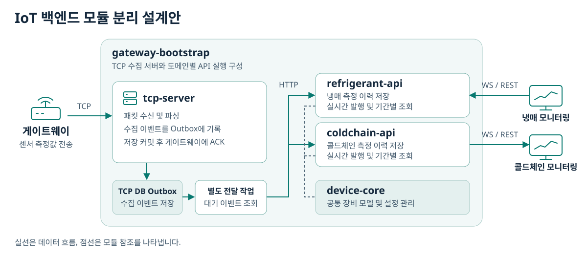
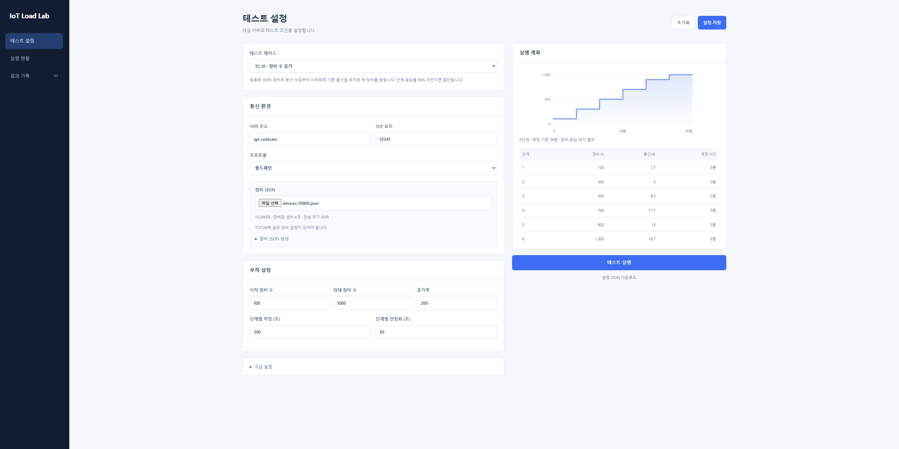
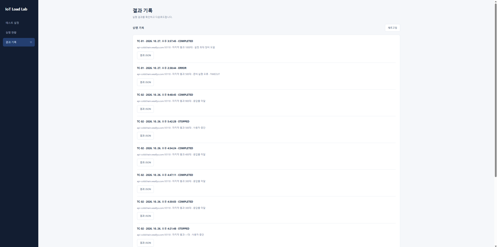

백엔드 개발 포트폴리오
한태희
Java와 Spring Boot로 B2B 물류 플랫폼과 IoT 모니터링 시스템을 개발했습니다. 네트워크 엔지니어로 기업망 구축과 운영을 경험한 뒤 백엔드 개발로 전환했습니다. 위앨리스에서는 데이터 모델과 API 설계, 장비 통신, 외부 서비스 연동, AWS 배포와 운영을 담당했습니다.
기술 스택
| 영역 | 기술 | 적용 경험 |
|---|---|---|
| 백엔드 | Java, Spring Boot, Spring Security, JPA, MyBatis | 서비스 API, 인증과 권한, 대용량 데이터 추출 |
| 실시간 데이터 전송 | WebSocket, STOMP | 게이트웨이와 공간 단위로 센서 수집 이벤트 발행 |
| 데이터베이스 | MySQL | 실행 계획 분석, 복합 인덱스와 유니크 제약 적용 |
| 장비 통신과 시험 도구 | TCP, Java NIO, Node.js | 장비 수집 서버와 가상 게이트웨이 개발 |
| 배포와 운영 | AWS EC2, RDS, SES, Docker, Nginx, GitHub Actions, Linux | 배포 자동화, HTTPS와 DNS 구성, 메일 발송 운영 |
| 모니터링과 부하 검증 | Spring Boot Actuator, Prometheus, Grafana, Uptime Kuma, JMeter, nGrinder | 서버 지표와 API 가용성 모니터링, 사용자 시나리오와 부하 시험 |
콜드체인과 냉매 센서
IoT 디바이스
모니터링
TCP 수집 서버와 서비스 API
프로젝트 개요와 맡은 역할
위앨리스 2024년 1월부터 단계별 개발
프로젝트 개요
콜드체인과 냉매 누출 감지 장비의 측정값을 한곳에서 모니터링하는 시스템입니다.
운영 담당자는 실시간 측정값으로 현재 상태를 확인하고, 기간별 차트로 수치가 언제부터 변했는지 살펴 이상 징후를 확인할 수 있습니다.
TCP 수집 서버와 모니터링 API 전담
- 장비 데이터 수집 TCP 연결과 패킷 처리를 구현하고 실제 게이트웨이 및 센서 연동을 검증했습니다.
- 모니터링 API 프론트엔드 개발자와 협업해 실시간 측정값과 차트용 센서 이력을 제공했습니다.
- 양산 전 검증 가상 게이트웨이 도구를 개발해 동시 접속과 분산 전송을 시험했습니다.
핵심 결과
TCP 동시 접속 시험
300대 → 900대5회 모두 10초 이내 ACK 수신율 90% 이상을 충족한 최대 시험 단계
센서 타임라인 API
2,000ms → 250ms동일 조회 조건에서 평균 응답 시간 약 87.5% 단축
사용 기술
- Java
- Spring Boot
- TCP Socket
- Java NIO
- WebSocket / STOMP
- REST API
- MySQL
- AWS
개발 경과
- 콜드체인 수집 서버 재구축
Node.js 기반 TCP 서버를 Spring Boot로 재구축하고 AWS 운영 환경을 이관했습니다.
- 콜드체인 게이트웨이와 센서의 기구 및 하드웨어 재설계
하드웨어팀이 재설계를 진행했고, 저는 신규 장비 연동 관련 논의에 참여했습니다.
- 신규 콜드체인 장비 연동 재개
펌웨어 개발팀과 전송 프로토콜을 협의하고 데이터 암호화 방식을 제안했습니다.
- 냉매 센서 연동 추가
콜드체인과 냉매 실장비의 데이터 수집을 검증했습니다.
- TCP 전용 수집 서버 분리
공통 수집을 모니터링 API에서 분리하고 부하 테스트를 진행했습니다.
- TCP 처리 및 센서 조회 성능 개선
패킷 처리와 소켓 입출력을 분리하고 센서 이력 조회의 병목을 개선했습니다.
초기 수집 서버 구축과 장비 연동
콜드체인 수집 서버 재구축
- 문서가 없던 Node.js TCP 서버의 동작을 분석하고 문서로 정리하면서 Spring Boot로 재구축했습니다.
- TPMS 타이어 정보 처리를 제거하고 콜드체인 센서 측정값만 저장하도록 변경했습니다.
- 실제 측정값을 표시하는 웹 화면용 API를 구현하고 SSE로 수집 이벤트를 전송했습니다.
- 외부 업체가 관리하던 AWS 환경을 이관받아 3계층 아키텍처를 참고해 재구성했습니다.
신규 콜드체인 장비 연동 재개
- 펌웨어 개발팀과 전송 프로토콜 및 서버 수신 방식을 협의했습니다.
- 제안한 데이터 전송 암호화 방식이 채택됐고, 연동 테스트용 데모 규격을 문서로 공유했습니다.
냉매 센서 연동 추가
- 기존 서버에서 콜드체인과 냉매 장비의 TCP 수집과 API 응답을 함께 처리했습니다.
- 12월에 두 종류의 실장비에서 데이터가 정상적으로 수집되는 것을 확인했습니다.
주요 성과
서비스 확장을 고려한 모듈 설계
콜드체인과 냉매는 서로 다른 게이트웨이를 사용하지만, 게이트웨이가 센서 데이터를 모아 전송하는 구조는 같았습니다.
장비 연결과 패킷 처리를 공통 TCP 전용 수집 서버로 분리하고, 수집 이후의 데이터 조회와 실시간 모니터링은 각 서비스의 요구에 맞춰 확장할 수 있도록 설계했습니다.
분리 작업과 함께 장비 수를 단계적으로 늘리는 TCP 부하 테스트를 진행해 응답률과 응답 시간을 확인했습니다.
TCP 수집과 모니터링 API의 역할을 나누고, 게이트웨이와 센서의 공통 모델 및 설정 관리는 device-core에 모았습니다.
현재 refrigerant-api에서 냉매와 콜드체인의 모니터링 기능을 함께 제공합니다.
두 서비스의 조회와 알림 요구가 달라질 때를 고려해 refrigerant-api와 coldchain-api를 별도 모듈로 구성하는 방안을 설계했습니다.
각 API가 전용 모니터링 화면에 데이터를 제공하면서 공통 TCP 수집 흐름과 device-core의 장비 관리 기능을 재사용하는 구조입니다.
수집 데이터는 DB Outbox를 거쳐 HTTP로 전달합니다.
전송 실패 시 재시도하고, 수신 서버는 이벤트 ID로 중복 처리를 막습니다.

TCP 수집 데이터는 Outbox를 거쳐 서비스별 API로 전달되고, 각 API는 공통 장비 관리 모듈을 참조합니다.
공통 수집 데이터를 서비스별 모니터링으로 전달
TCP 수집 서버
장비의 원시 패킷을 받아 측정값을 해석합니다.
수집 이벤트를 모니터링 API로 전달합니다.
모니터링 API
공통 수집 이벤트를 받아 서비스별 모니터링 단위에 맞춰 전달 대상을 정합니다.
구독 기준은 API에서 관리하므로 TCP 수집 로직을 바꾸지 않고 적용할 수 있습니다.
냉매 누출 감지
냉동창고 공간별 구독한 공간에 설치된 여러 센서의 측정값을 모아 창고 전체의 상태를 확인합니다.
콜드체인
이동형 게이트웨이별 구독이동하는 게이트웨이와 연결된 센서의 측정값을 함께 추적합니다.
실시간 전송은 WebSocket과 STOMP로 구현
API가 공간별 또는 게이트웨이별 목적지로 이벤트를 발행하면, STOMP 브로커가 해당 목적지를 구독한 화면에 새 측정값을 전달합니다.
기간별 이력은 REST API로 조회
센서별 측정값과 수집 시각(밀리초 타임스탬프)을 반환해 시계열 차트를 구성할 수 있도록 했습니다.
TCP 바이트 스트림에서 장비 메시지 복원
- 문제 발견
당시 게이트웨이 펌웨어에서 MQTT를 지원할 수 없어 장비의 자체 TCP 프로토콜로 데이터를 수집했습니다.
실장비 연동 중 메시지 일부만 읽힌 상태에서 파싱을 시도해 오류가 발생했습니다. - 원인 진단
TCP는 바이트를 순서대로 전달하는 스트림입니다.
한 번의read()에는 메시지 일부만 들어오거나 여러 메시지가 함께 들어올 수 있습니다.
수신한 바이트에서 장비 프로토콜의 프레임 경계를 찾아 완성된 메시지만 파싱해야 했습니다. - 개선과 재검증
- 수신 연결별 버퍼에 바이트를 누적하고, 완성된 프레임만 순서대로 파싱했습니다.
메시지 앞부분만 도착하면 버퍼에 보관했다가 다음 읽기에서 나머지가 들어올 때 프레임을 완성했습니다. - 송신 Selector 스레드가 연결별 송신 큐를 관리하도록 구성했습니다.
논블로킹write()가 응답 일부만 쓰면 같은ByteBuffer를 큐에 유지하고, 다시 쓸 수 있을 때 남은 바이트부터 보냈습니다. - 검증 게이트웨이 3대와 센서 8개를 연결해 정상 수집을 확인했습니다.
자동화 테스트로 미완성 프레임이 보존되고 다음 읽기에서 원본 메시지가 복원되는지 확인했습니다.
- 수신 연결별 버퍼에 바이트를 누적하고, 완성된 프레임만 순서대로 파싱했습니다.
분할 수신 테스트 코드 보기
테스트 준비 단계에서 장비 메시지의 원본 바이트(plainPacket)와 수신 코덱(codec)을 구성합니다.
하나의 프레임을 같은 수신 버퍼에 두 번에 나눠 넣어, TCP 읽기가 두 차례에 걸쳐 이뤄지는 상황을 재현합니다.
@Test
void waitsUntilTheEncryptedFrameIsComplete() {
byte[] encryptedPacket = encode(plainPacket);
int splitAt = 16;
ByteBuffer inbound = ByteBuffer.allocate(128);
// 첫 번째 읽기: 프레임 앞부분만 들어온다.
inbound.put(encryptedPacket, 0, splitAt);
inbound.flip();
// 메시지를 반환하지 않고, 다음 읽기를 위해 바이트를 보존한다.
assertThat(codec.decodeInbound(inbound)).isEmpty();
assertThat(inbound.position()).isZero();
// 두 번째 읽기: 보존한 바이트 뒤에 프레임의 나머지를 붙인다.
inbound.compact();
inbound.put(encryptedPacket, splitAt, encryptedPacket.length - splitAt);
inbound.flip();
// 프레임이 완성되면 원본 바이트가 복원되고 읽을 바이트가 남지 않는다.
assertThat(codec.decodeInbound(inbound).orElseThrow().plainPacket())
.containsExactly(plainPacket);
assertThat(inbound.hasRemaining()).isFalse();
}- 연속 프레임과 응답 순서 두 메시지를 한 번에 전송하고 서버가 순서대로 처리해 응답하는지 소켓 테스트로 확인했습니다.
- 부분 송신과 송신 큐 일부 바이트를 쓴 상태에서 같은 버퍼의 남은 길이가 유지되고, 큐에서 응답이 등록 순서대로 꺼내지는지 확인했습니다.
가상 게이트웨이 도구와 TCP 부하 시험 설계
양산 전 목표는 게이트웨이 500대 이상이 안정적으로 통신할 수 있는지 검증하는 것이었습니다.
같은 조건을 반복할 수 있도록 Node.js로 가상 게이트웨이 도구를 개발했습니다.
- 분산 전송
가상 게이트웨이가 60초 주기로 데이터를 보내는 상황을 재현했습니다. - 동시 접속
여러 게이트웨이가 한꺼번에 접속하는 상황을 재현했습니다. - 응답률 측정
장비 수를 단계적으로 늘리며 연결 시도 후 10초 이내에 수신 확인 응답(ACK)을 받은 비율을 집계했습니다.
AI 코딩 도구를 활용해 설계한 시험을 웹 화면으로 빠르게 구현했습니다.
장비 수와 측정 시간을 설정하면 단계별 부하 계획을 그래프와 표로 확인할 수 있도록 했습니다.
시험 결과를 JSON으로 남겨 같은 조건에서 서버 개선 전후의 응답률과 응답 시간을 비교했습니다.


TCP 부하 시험에서 발견한 ACK 지연과 병목 개선
- 문제 발견
개선 전 동시 접속 시험에서 장비 수를 400대까지 늘리자, 첫 회차의 10초 이내 ACK 수신율이 85.25%로 떨어져 통과 기준인 90%에 미달했습니다. - 원인 진단
서버의 처리 경로를 추적해, Selector 스레드가 소켓 입출력뿐 아니라 패킷 파싱, 장비 설정 조회, Outbox 저장까지 직접 수행한다는 점을 확인했습니다.
여러 장비가 동시에 접속하면 이 작업들이 같은 스레드의 다음 읽기와 응답 전송을 늦추는 구조였습니다. - 개선과 재검증
Selector에는 소켓 입출력과 프레임 분리를 맡기고, 파싱과 조회, 저장은 별도 작업 스레드 풀로 옮겼습니다.
변경 후 같은 판정 기준으로 다시 시험해 최대 통과 단계를 비교했습니다.
개선 결과
패킷 처리 개선 전후 비교에서 5회 모두 10초 이내 ACK 수신율 90% 이상을 충족한 최대 동시 접속 시험 단계
시험 환경 AWS EC2 t3.small(2 vCPU, 메모리 2 GiB)에서 콜드체인 TCP 수집을 시험했습니다. 자체 개발한 가상 게이트웨이 100~1,000대에 각각 센서 4개를 설정했습니다.
| 시험 지표 | 변경 전 | 변경 후 |
|---|---|---|
| 동시 접속에서 5회 모두 기준을 충족한 최대 단계 | 300대 | 900대, 회차별 최저 93% |
| 동시 접속에서 처음 기준에 미달한 단계 | 400대, 첫 회차 85.25% | 1,000대, 첫 회차 88.6% |
| 1,000대 분산 전송의 정상 응답 p99 | 284ms | 143ms |
1,000대 분산 전송 단계에서는 전후 모두 측정 구간 3,000건에 정상 응답했습니다. 동시 접속 시험에서는 응답 제한 시간을 넘긴 요청의 데이터 저장 여부도 DB에서 별도로 확인했습니다. 시험 수치는 결과 JSON의 관측값이며, 서버 커밋과 실행 프로파일은 해당 JSON에 기록돼 있지 않습니다.
패킷 처리 개선의 구현 세부 사항
같은 연결에서는 패킷을 한 번에 하나씩 처리하고, Outbox 저장이 커밋된 뒤 ACK를 보내는 순서를 유지했습니다.
외부 알림을 비동기로 분리하고, TCP 처리와 API 서버로의 HTTP 전달을 구분해 시험할 수 있도록 부하 시험용 프로파일을 추가했습니다.
센서 타임라인 조회 지연 분석과 개선
- 문제 발견
모니터링 화면에서 센서 타임라인을 조회할 때 응답이 늦어지고 서버 CPU 사용량도 함께 상승했습니다.
조회 요청을 재현하고 프로세스별 CPU 사용량을 확인해 MySQL로 조사 범위를 좁혔습니다. - 원인 진단
해당 조회 쿼리의 MySQL 실행 계획을 확인한 결과, 센서 수집 테이블을 전체 스캔하는 것으로 나타났습니다.
실행 계획상 검사 대상은 약 272만 행이었고, 스키마에 정의된 복합 인덱스가 운영 DB에 반영되지 않은 상태였습니다. - 개선과 재검증
운영 DB에 게이트웨이 수집 ID와 센서 수집 시각을 묶은 복합 인덱스를 적용했습니다.
실행 계획이 인덱스 조회로 바뀐 것을 확인하고, 동일한 조회 조건에서 API 평균 응답 시간을 비교했습니다.
동일 조회 조건에서의 API 평균 응답 시간, 약 87.5% 감소
같은 요청에서 관찰한 MySQL CPU 사용량은 약 60%에서 3%로 낮아졌습니다.

B2B 물류 플랫폼
프로젝트 개요와 맡은 역할
위앨리스 2024년 7월 프로젝트 논의 시작
프로젝트 개요
포워더와 고객사가 화물 정보와 문서를 공유하는 B2B 물류 플랫폼입니다.
포워더는 선적과 고객사별 화물을 관리하고, 고객사는 공유받은 화물의 운송 현황과 관련 문서를 한곳에서 확인할 수 있습니다.
백엔드 개발 전담
- 기획과 연동 요건 협의 Figma로 화면 설계안을 만들고 기획자와 기능 및 권한을 정의했습니다. AIS 데이터 제공업체 선정 미팅에서 연동 요건을 검토했습니다.
- 화물 모델과 서비스 API 개발 MBL과 HBL 기반 화물 모델, 고객사별 접근 권한, JWT와 이메일 인증을 구현했습니다. 정기결제와 선박 운항 정보 연동도 맡았습니다.
- 배포와 품질 관리 AWS 인프라와 CI/CD를 구성하고 테스트를 작성했습니다. 프론트엔드 개발자와 API 명세를 합의하고 문서로 관리했습니다.
사용 기술
- Java
- Spring Boot
- REST API
- JWT
- Spring REST Docs
- AWS
- Docker
- GitHub Actions
개발 경과
- 초기 기획과 AIS 연동 검토
기획자와 화면, 기능 및 권한을 정의했습니다.
AIS 제공업체를 비교하고 담당자와 연동 요건을 협의했습니다. - 화물 관리와 인증 개발
MBL과 HBL 기반 화물 모델을 설계하고, 화물 관리와 고객사별 공유 권한, 회원 인증 API를 구현했습니다.
- 화면 재설계와 구독 결제 준비
기획자와 Figma에서 화면을 재설계했습니다.
구독 결제를 위해 PG사를 검토하고 연동 요건을 확인했습니다. - AIS 동기화와 화물 관리 기능 확장
AIS 데이터를 하루 4회 동기화해 내부 DB에 저장하도록 전환했습니다.
MBL 수기 등록을 추가하고 관리자용 API를 개발했습니다. - 기능 안정화와 API 규칙 합의
프론트엔드 개발자와 연동 문제를 검토하고 기능 오류와 코드를 정비했습니다.
요청과 응답 구조, 오류 처리, 빈 값 표현의 기준을 함께 정했습니다. - 이메일 로그인 전환
로그인 식별자를 이메일로 바꾸고 기존 회원 데이터를 마이그레이션했습니다.
- 2026년 3월 이후서비스 운영
초기 기획과 핵심 기능 개발
초기 기획과 AIS 연동 검토
- Figma로 화면 설계안을 만들고 기획자와 화면별 기능과 권한을 정의했습니다.
- AIS 데이터 제공업체를 비교하고, 업체 담당자와 서비스에 필요한 데이터와 연동 요건을 협의했습니다.
화물 관리와 회원 인증 개발
- 하나의 선적에 여러 고객 화물이 연결되는 관계를 MBL과 HBL로 모델링하고, 화물과 문서를 관리하는 REST API를 구현했습니다.
- 화물 소유 회사와 공유받은 고객사의 권한을 구분하고, JWT 기반 회원 인증과 이메일 인증을 구현했습니다.
화면 재설계와 구독 결제 준비
- 기획자와 기존 화면을 검토하고 Figma에서 화면을 다시 설계했습니다.
- 구독 결제 도입을 위해 PG사를 조사하고 담당자와 결제 연동 요건을 확인했습니다.
기능 확장과 운영 전환
AIS 데이터 관리와 화물 등록 개선
- 화면 요청마다 외부 API에서 조회하던 AIS 데이터를 스케줄러로 하루 4회 갱신해 내부 DB에 저장하도록 바꿨습니다.
- AIS 연동 없이 MBL을 직접 입력해 등록할 수 있도록 하고, 어드민 페이지에서 사용할 관리자용 API를 개발했습니다.
코드 정비와 API 규칙 합의
- 프론트엔드 개발자와 연동 과정에서 겪은 문제를 검토하고, 기존 기능 오류를 수정하며 코드를 정비했습니다.
- API 요청과 응답 구조, 오류 처리, 페이지네이션, 빈 값 표현의 기준을 함께 정했습니다.
이메일 로그인 전환
- 로그인 식별자를 기존 아이디에서 이메일 주소로 바꾸고, 기존 회원도 새 방식으로 로그인할 수 있도록 회원 데이터를 마이그레이션했습니다.
2026년 3월 이후 | 서비스 운영
주요 성과
성과 요약
AIS 데이터 조회 구조 전환
하루 4회 동기화화면 요청마다 외부 API를 호출하던 구조를 바꿨습니다.
스케줄러로 AIS 데이터를 내부 DB에 저장하고, 화면에서는 저장된 데이터를 조회하도록 했습니다.
AWS 인프라와 배포
프라이빗 백엔드 배포 자동화백엔드 EC2와 RDS를 프라이빗 환경에 배치하고, 사용자 요청은 로드 밸런서의 HTTPS 경로로 받도록 구성했습니다.
GitHub Actions로 Spring Boot 빌드부터 JAR 배포까지 자동화했습니다.
WECARGO 전체 도메인 아키텍처
화물 등록, 공유, 운송 현황 조회
관리자용 API를 통한 운영
회사와 회원
회사, 회원, 인증, 초대
사용자와 회사별 접근 범위를 관리합니다.
화물과 운송
MBL, HBL, 컨테이너, 운송 일정
선적과 고객 화물을 관리하고 AIS로 운송 정보를 갱신합니다.
구독과 결제
구독, 주문, 결제
서비스 이용권과 정기결제를 관리합니다.
운영 기능
대시보드, 이력, 공지, 문의
화물 현황과 변경 기록을 조회하고 운영 요청을 처리합니다.
화물 도메인 설계
하나의 선적에 여러 고객 화물이 속하지만, 각 화물에 연결된 컨테이너와 문서는 다릅니다.
선적에 공통인 운송 정보는 MBL을 기준으로 관리하고, 고객별 화물 정보는 HBL에서 관리하도록 설계했습니다.
AIS 연동 없이 선적과 컨테이너를 등록합니다.
외부 운송 데이터를 선적 상태, 컨테이너, 운송 일정으로 나눠 반영합니다.
MBL 선적
선사, 운송 경로, 선적 상태
TransportSchedule 운송 일정
선박, 항차, 출발 및 도착 정보
MBL 기준으로 일정 관리
HBL 고객 화물
이해관계자, 첨부 문서, 화물 인도 상태
Container 컨테이너
컨테이너 번호, 운송 상태, 수기 또는 AIS 출처
- 선적 정보와 화물 연결
MBL은 선적에 속한 컨테이너를 관리하고, 운송 일정은 MBL을 기준으로 저장합니다.
HBL은 해당 화물에 필요한 컨테이너를 선택해 연결하고, 이해관계자와 문서를 관리합니다. - 수기 등록과 AIS 동기화
AIS 연동 없이도 선적을 등록할 수 있도록 했습니다.
AIS로 들어온 정보는 선적 상태, 컨테이너, 운송 일정에 나눠 반영하고, 같은 번호의 컨테이너가 수기와 AIS 양쪽에 있으면 번호를 기준으로 화물 연결에 따른 사용 상태를 동기화했습니다. - 고객이 보는 운송 현황
고객사는 자신에게 공유된 화물에 연결된 컨테이너를 확인할 수 있습니다.
AIS에서 들어온 선적 상태와 운송 경로를 바탕으로 화면에 표시할 화물 상태를 갱신합니다.
화물 문서 공유 및 접근 권한
포워더가 화물에 파일을 등록하고, 문서마다 수출자, 수입자, 파트너 포워더에게 공개할 범위를 설정합니다.
프론트엔드 개발자와 업로드부터 문서 등록까지의 처리 순서와 역할을 협의해 구현했습니다.
-
프론트엔드 ↔ 백엔드
업로드 권한 확인
백엔드가 등록 권한을 확인하고 S3 객체 키와 Presigned URL을 발급합니다.
-
프론트엔드 → S3
파일 직접 업로드
프론트엔드가 발급받은 URL로 파일 본문을 S3에 전송합니다.
-
프론트엔드 → 백엔드
화물 문서 등록
객체 키, 원본 파일명, 공개 설정을 받아 해당 화물에 연결합니다.
-
백엔드 → 프론트엔드
권한에 맞춰 문서 조회
화물 소유 포워더에게는 전체 문서를, 수출자, 수입자, 파트너 포워더에게는 각 유형에 공개된 문서만 반환합니다.
화물 검색을 위한 AIS 데이터 동기화
- 요구사항
기존에는 화면 요청마다 외부 AIS API의 응답을 바로 표시했습니다.
외부 API가 ETA와 ETD 기간 필터를 제공하지 않아, 화물 목록에서 날짜 조건으로 검색할 수 있도록 AIS 데이터를 내부 DB에 저장하기로 했습니다. - 설계 판단
AIS 원본이 실시간으로 갱신되지 않는 점을 확인하고 하루 4회 동기화하도록 구성했습니다.
프라이빗 백엔드를 유지하고 인프라 비용을 줄이기 위해 AWS Lambda와 NAT Gateway를 구성하지 않고, 기존 공개 웹 서버에서 스크립트를 crontab으로 실행했습니다.
-
공개 웹 서버 → 백엔드
동기화 대상 조회
AIS에 연동된 선적 중 운송이 완료되지 않은 대상을 API로 조회합니다.
-
공개 웹 서버 → 외부 AIS API
운송 정보 수집
동기화 대상의 최신 운송 정보를 외부 API에서 가져옵니다.
-
공개 웹 서버 → 백엔드
응답 전달
스크립트는 수집한 응답을 그대로 백엔드 API로 전달합니다.
-
프라이빗 백엔드 → 내부 DB
도메인 반영과 검색
백엔드에서 선적 상태, 컨테이너, 구간별 운송 일정으로 나눠 저장합니다. 화물 목록은 저장된 일정으로 ETA와 ETD를 검색합니다.
구간별 운송 일정을 활용한 화물 검색
- 요구사항
화물 목록에서 출발 예정일(ETD)과 도착 예정일(ETA)을 기준으로 기간을 검색하고 정렬할 수 있어야 했습니다. - 설계 판단
환적이 포함된 선적은 각 운송 구간의 출발 및 도착 일정을 모두 관리해야 했습니다.
구간별 일정 모델을 유지하고, 목록에서는 첫 구간의 출발 예정일과 마지막 구간의 도착 예정일을 기준으로 삼았습니다. - 구현
Querydsl 서브쿼리에서 검색 기준에 맞는 일정을 선택하고, AIS 데이터 보유 여부에 따라 일정의 출처를 구분했습니다.
선택한 일정에 기간 조건과 정렬을 적용하고, 전체 건수 조회에도 같은 기간 조건을 사용했습니다.
| 검색 및 정렬 기준 | 선택하는 일정 |
|---|---|
| 출발 예정일(ETD) | 첫 운송 구간의 출발 예정일 |
| 도착 예정일(ETA) | 마지막 운송 구간의 도착 예정일 |
JPA 목록 조회의 페이징과 N+1 개선
- 문제 확인
목록은 HBL 한 건을 한 행으로 보여주면서, 각 화물에 연결된 컨테이너 정보도 함께 제공해야 했습니다.
목록 응답을 조립하는 과정에서 HBL 수만큼 컨테이너 조회가 반복되고 있었습니다. - 원인 분석
HBL과 컨테이너는 일대다 관계라 조인하면 HBL 한 건이 컨테이너 수만큼 여러 행으로 펼쳐질 수 있습니다.
응답 조립 경로에서는 서비스 코드가 HBL마다 컨테이너 리포지토리를 개별 호출해 N+1 형태의 반복 조회가 발생했습니다. - 개선
페이징 검색과 정렬을 적용해 페이지에 포함할 HBL ID를 먼저 확정한 뒤, 선택된 HBL과 연결된 컨테이너를 fetch join으로 가져왔습니다.
반복 조회 페이지의 HBL ID를 모아IN조건으로 컨테이너를 일괄 조회하고, 결과를 HBL별로 묶어 목록 응답에 사용했습니다.
목록 응답 조립에 사용되는 컨테이너 조회 호출 기준
컨테이너 일괄 조회 코드 보기
페이지의 HBL ID를 모아 저장소에 한 번 전달합니다.
조회 결과를 HBL ID로 묶으면 각 화물의 응답을 조립할 때 다시 조회할 필요가 없습니다.
Set<Long> hblIds = myHBLs.getContent().stream()
.map(HBLInfo::id)
.collect(Collectors.toSet());
List<Container> containers = containerRepository.findByHblIdIn(hblIds);
Map<Long, List<Container>> containersByHbl = containers.stream()
.collect(Collectors.groupingBy(Container::getHblId));동시 MBL 등록 시 중복 저장 방지
동시 MBL 등록 요청에서 중복 저장이 발생했을 때는 중복 검증 로직을 수정하고 DB에 복합 유니크 제약을 추가했습니다.
Spring AOP로 실행 시간과 예외 로그 공통화
도메인 패키지 내 대상 메서드의 시작, 종료, 예외 기록을 @Around에 모았습니다.
같은 스레드의 중첩 호출은 추적 ID를 공유하고, 호출 깊이와 경과 시간을 함께 남겨 어느 메서드에서 예외가 발생했는지 로그에서 확인할 수 있게 했습니다.
메서드 실행 추적 코드 보기
호출 전 추적을 시작하고, 종료 시 실행 시간을 기록합니다.
예외가 발생하면 실행 시간과 예외 내용을 기록한 뒤 호출자에게 예외를 그대로 전달합니다.
TraceStatus status = logTrace.begin(joinPoint.getSignature().toShortString());
try {
Object result = joinPoint.proceed();
logTrace.end(status);
return result;
} catch (Exception e) {
logTrace.exception(status, e);
throw e;
}결제, 물류 정보 연동, 배포
NICE Payments의 빌링키를 이용한 정기결제와 환불을 구현하고, 승인 실패 시 재시도와 구독 상태 처리를 구성했습니다. SeaVantage에서 선박 위치와 입출항 일정 등 물류 정보를 가져와 하루 네 차례 동기화했습니다. GitHub Actions와 AWS EC2, Docker, RDS로 배포 환경을 구성하고 운영했습니다.
프론트엔드와 API 규칙 합의
화면에서 여러 API 응답을 조합해야 하는 부담을 확인하고, 요청과 응답 구조, 오류 코드, 페이지네이션과 빈 값 표현 기준을 프론트엔드 개발자와 협의했습니다. 기존 API 약 82개의 변경 범위를 고려해 핵심 화물 기능부터 순차 적용했습니다.
사내 기술 발표와 문서화
WECARGO 인증과 인가
WECARGO의 로그인과 권한 판단 흐름을 분석하고, 토큰 갱신 기능을 도입할 때 팀이 검토해야 할 내용을 발표 자료로 직접 정리했습니다. Refresh Token 도입안과 함께 토큰 만료, 갱신 실패, 로그아웃 상황에서 프론트엔드와 백엔드가 각각 처리할 일을 제안했습니다.
AI와 함께 외부 데이터 연결하기
REST API와 HTTP 요청 및 응답의 기본을 설명하고, 공공데이터 API를 웹 화면에 연결하는 실습 자료를 구성했습니다. 공식 문서에서 인증과 필수 파라미터를 찾고, 작은 API 요청을 먼저 성공시킨 뒤, AI가 생성한 코드가 공식 규격에 맞는지 확인하는 순서로 실습을 설계했습니다.
이전 프로젝트
- LG전자 TV OS 관리 플랫폼 고도화 — 대용량 데이터 추출과 다운로드 기능을 단독 개발했습니다. 비동기 작업 큐로 파일 생성을 순차 처리하고, 10,000건 단위 분할 조회와 SXSSF를 적용해 메모리 누적을 줄였습니다. 운영 데이터로 파일 생성을 확인하고 nGrinder로 부하 시험을 수행했습니다.
- KooRoo API 서버 운영 준비 — Prometheus와 Grafana, Uptime Kuma를 구성했습니다. JMeter로 약 100개 계정을 활용한 사용자 시나리오를 검증하고, 동시 로그인 중 발견한 오류의 재현 조건을 개발 담당자에게 전달했습니다.
- Habiters — 해커톤 이후 개발을 이어가 습관 관리 REST API를 공개 배포했습니다. 배포 환경에서 로그를 확인할 수 있도록 Logback을 적용하고, Spring REST Docs로 API 테스트와 문서 생성을 연결했습니다. Habiters 백엔드 저장소